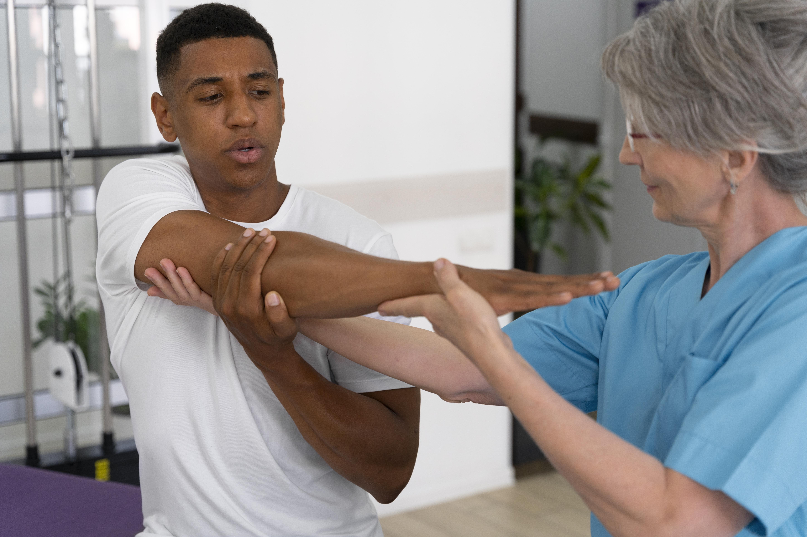
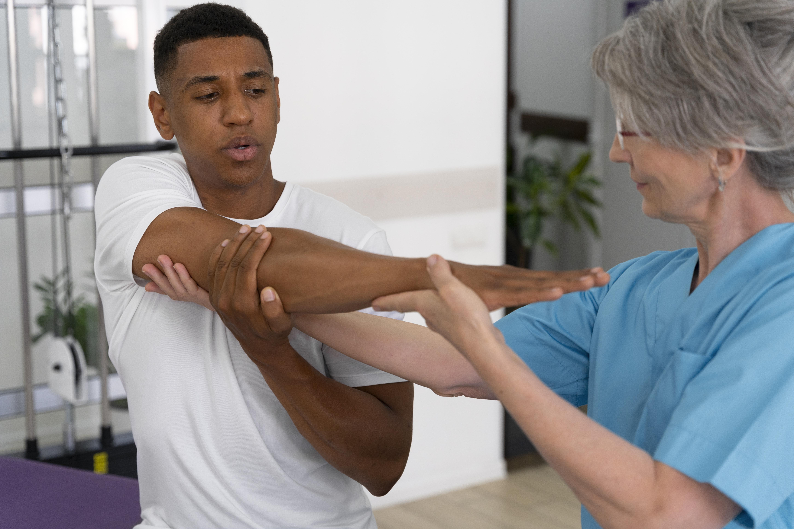
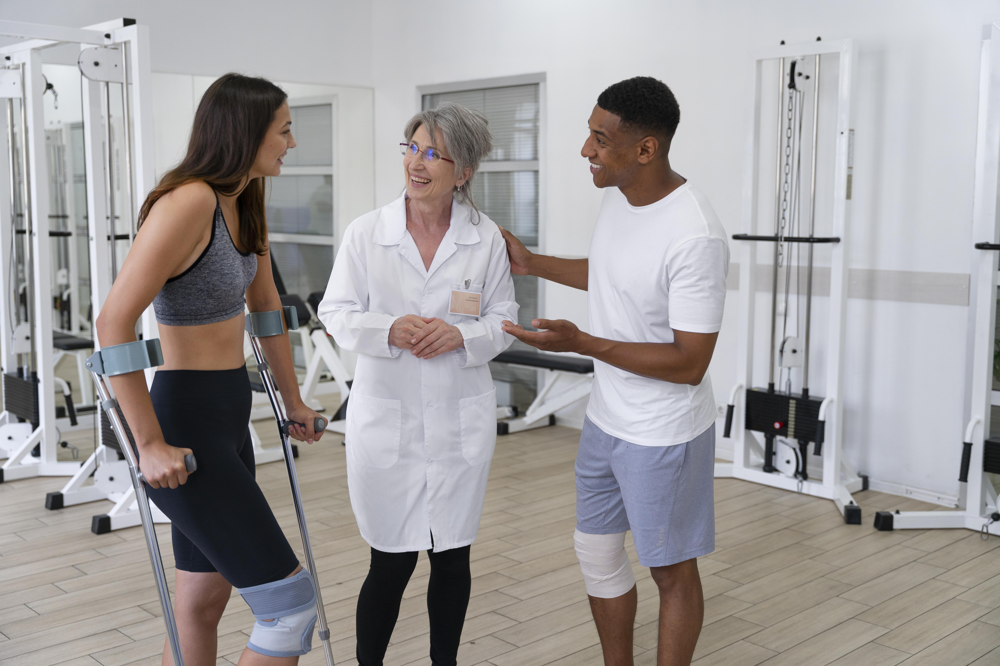
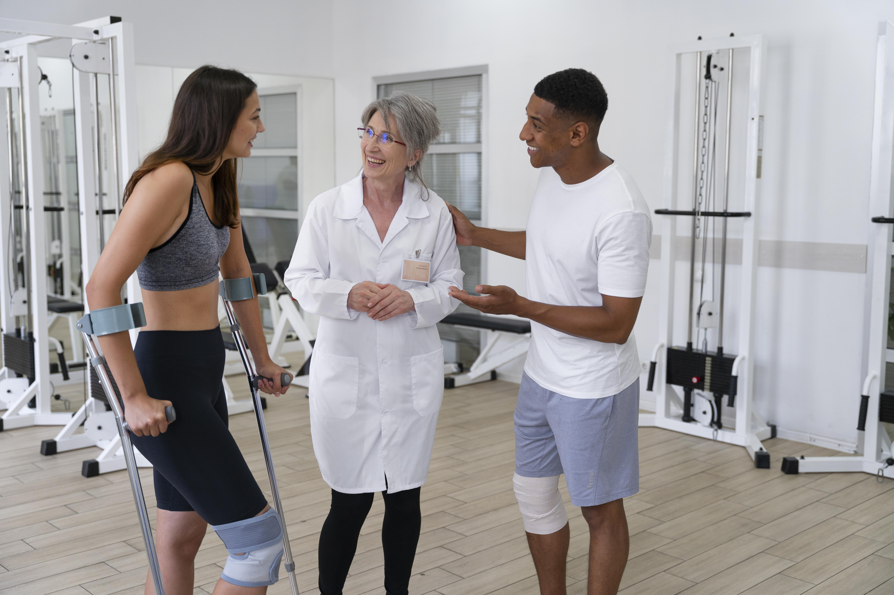

GYM-Care! Seu Centro de Especialidades Médicas e Academia.
Bem-vindo ao GYM-Care: seu Centro de Especialidades Médicas e Academia de excelência, projetado especialmente para atender todas as necessidades dos atletas e praticantes de musculação. Aqui, oferecemos um ambiente integrado que une a expertise médica com o universo do fitness, proporcionando cuidados abrangentes e personalizados para o bem-estar completo dos nossos clientes.
Na área de medicina esportiva, contamos com uma equipe de profissionais altamente qualificados, incluindo médicos especialistas em medicina esportiva, ortopedistas, cardiologistas e fisioterapeutas. Esses especialistas estão prontos para lidar com lesões esportivas, otimizar o desempenho, realizar exames preventivos e acompanhar o progresso de cada atleta de forma individualizada.
Nossa academia é o espaço perfeito para os amantes de musculação e fitness. Com equipamentos de última geração e um ambiente estimulante, nossos clientes podem treinar com conforto e segurança, enquanto recebem o suporte de profissionais de educação física experientes. Além disso, oferecemos programas de treinamento personalizados, adaptados aos objetivos e necessidades específicas de cada pessoa.
No GYM-Care, a nutrição é tratada com a importância que merece. Nossos nutricionistas esportivos trabalham em conjunto com os médicos e educadores físicos para criar planos alimentares sob medida, garantindo que os atletas recebam os nutrientes adequados para potencializar seus resultados, promover a recuperação muscular e manter a saúde em alta performance.
Valorizamos a prevenção e a abordagem holística da saúde, incentivando a busca por um equilíbrio entre o corpo e a mente. Por isso, oferecemos também serviços de bem-estar, como aulas de yoga, pilates e massagens terapêuticas, para relaxar e fortalecer o corpo após os treinos intensos.
Se você é um atleta em busca de uma abordagem completa para cuidar da sua saúde e aprimorar seu desempenho esportivo, o GYM-Care é o lugar perfeito para você. Nossa missão é ser o parceiro de confiança na sua jornada rumo ao máximo potencial físico e bem-estar duradouro. Venha fazer parte da nossa comunidade e alcance resultados extraordinários em um ambiente dedicado ao cuidado integral do atleta.
 

 
